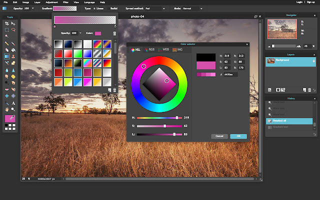
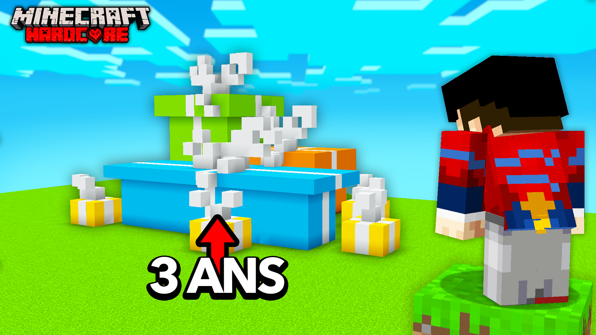
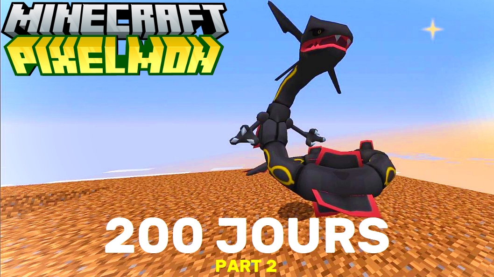

Tournage
Voixoff
Montage
Accueil
Statistiques
Miniature
Site : Pixlr

Information:
Les miniatures sont très rapides à faire, elles doivent attirer l'oeil du spectateur
Une miniature faite par un pro:
Une miniature faite par moi:

